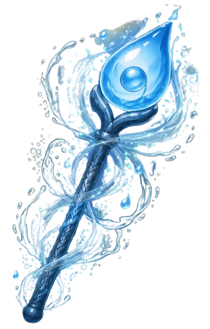

Relate
¡Guardianes, Blue necesita nuevamente su ayuda! 💙
El agua es necesaria para que las personas, los animales y las plantas puedan vivir. Ahora deberán encontrar las parejas correctas para descubrir cómo el agua ayuda a cada uno.
🔎 Une cada elemento de la izquierda con la opción que le corresponde.
¡Guardianes, Blue necesita nuevamente su ayuda! 💙
El agua es necesaria para que las personas, los animales y las plantas puedan vivir. Ahora deberán encontrar las parejas correctas para descubrir cómo el agua ayuda a cada uno.
🔎 Une cada elemento de la izquierda con la opción que le corresponde.
","showMinimize":false,"itinerary":{"showClue":false,"clueGame":"","percentageClue":40,"showCodeAccess":false,"codeAccess":"","messageCodeAccess":""},"cardsGame":[{"url":"resources/A1.png","x":0,"y":0,"author":"","alt":"","audio":"","color":"#000000","backcolor":"#ffffff","eText":"","urlBk":"resources/A2.png","xBk":0,"yBk":0,"authorBk":"","altBk":"","audioBk":"","colorBk":"#000000","backcolorBk":"#ffffff","eTextBk":""},{"url":"resources/B1.png","x":0,"y":0,"author":"","alt":"","audio":"","color":"#000000","backcolor":"#ffffff","eText":"","urlBk":"resources/B2.png","xBk":0,"yBk":0,"authorBk":"","altBk":"","audioBk":"","colorBk":"#000000","backcolorBk":"#ffffff","eTextBk":""},{"url":"resources/D1.png","x":0,"y":0,"author":"","alt":"","audio":"","color":"#000000","backcolor":"#ffffff","eText":"","urlBk":"resources/D2.png","xBk":0,"yBk":0,"authorBk":"","altBk":"","audioBk":"","colorBk":"#000000","backcolorBk":"#ffffff","eTextBk":""},{"url":"resources/E1.png","x":0,"y":0,"author":"","alt":"","audio":"","color":"#000000","backcolor":"#ffffff","eText":"","urlBk":"resources/E2.png","xBk":0,"yBk":0,"authorBk":"","altBk":"","audioBk":"","colorBk":"#000000","backcolorBk":"#ffffff","eTextBk":""},{"url":"resources/F1.png","x":0,"y":0,"author":"","alt":"","audio":"","color":"#000000","backcolor":"#ffffff","eText":"","urlBk":"resources/F2.png","xBk":0,"yBk":0,"authorBk":"","altBk":"","audioBk":"","colorBk":"#000000","backcolorBk":"#ffffff","eTextBk":""}],"isScorm":0,"textButtonScorm":"Guardar la puntuación","repeatActivity":false,"textAfter":"%3Ch3%3E%3C/h3%3E","version":1.3,"percentajeCards":100,"type":0,"showSolution":true,"timeShowSolution":3,"time":3,"evaluation":false,"evaluationID":"Guardián Consciente","id":"20269220143300","msgs":{"msgSubmit":"Enviar","msgClue":"¡Genial! La pista es:","msgCodeAccess":"Código de acceso","msgPlayStart":"Pulse aquí para jugar","msgScore":"Puntuación","msgErrors":"Errores","msgHits":"Aciertos","msgMinimize":"Minimizar","msgMaximize":"Maximizar","msgFullScreen":"Pantalla Completa","msgExitFullScreen":"Salir del modo pantalla completa","msgNoImage":"Pregunta sin imágenes","msgEndGameScore":"Antes de guardar la puntuación comience la partida.","msgScoreScorm":"La puntuación no se puede guardar porque esta página no forma parte de un paquete SCORM.","msgOnlySaveScore":"¡Sólo puede guardar la puntuación una vez!","msgOnlySave":"Sólo puede guardar una vez","msgInformation":"Información","msgYouScore":"Su puntuación","msgAuthor":"Autoría","msgOnlySaveAuto":"Su puntuación se guardará después de cada pregunta. Sólo puede jugar una vez.","msgSaveAuto":"Su puntuación se guardará automáticamente después de cada pregunta.","msgSeveralScore":"Puede guardar la puntuación tantas veces como quiera","msgYouLastScore":"La última puntuación guardada es","msgActityComply":"Ya ha realizado esta actividad.","msgPlaySeveralTimes":"Puede realizar esta actividad cuantas veces quiera","msgClose":"Cerrar","msgAudio":"Audio","msgNumQuestions":"Número de tarjetas","msgTryAgain":"Necesita al menos un %s% de respuestas correctas para conseguir la información. Vuelva a intentarlo.","msgEndGameM":"Muy bien guardián!","msgUncompletedActivity":"Actividad no completada","msgSuccessfulActivity":"💧 ¡Excelente trabajo, Guardián! ¡Lo lograste! 🎉 Ahora comprendes por qué el agua es tan importante para las personas, los animales y las plantas. Recuerda: todos dependemos del agua y todos podemos ayudar a cuidarla. 🌎💙 🏅 ¡Has ganado la insignia de Guardián Consciente! Blue está cada vez más fuerte gracias a ti. ¡Sigue adelante, Guardián, una nueva misión te espera! 🦅💧","msgUnsuccessfulActivity":"Actividad no superada. Puntuación: %s","msgTypeGame":"Relaciona","msgCheck":"Comprobar","msgRestart":"Reiniciar"}}


💧 ¡Excelente trabajo, Guardián! ¡Lo lograste! 🎉
Ahora comprendes por qué el agua es tan importante para las personas, los animales y las plantas. Recuerda: todos dependemos del agua y todos podemos ayudar a cuidarla. 🌎💙 🏅 ¡Has ganado la insignia de Guardián Consciente! Blue está cada vez más fuerte gracias a ti. ¡Sigue adelante, Guardián, una nueva misión te espera! 🦅💧
